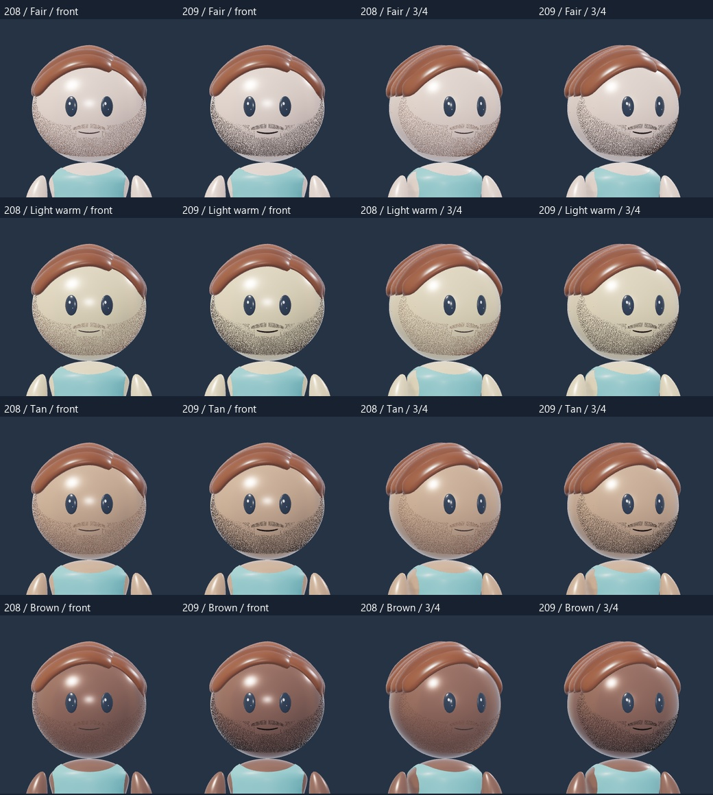
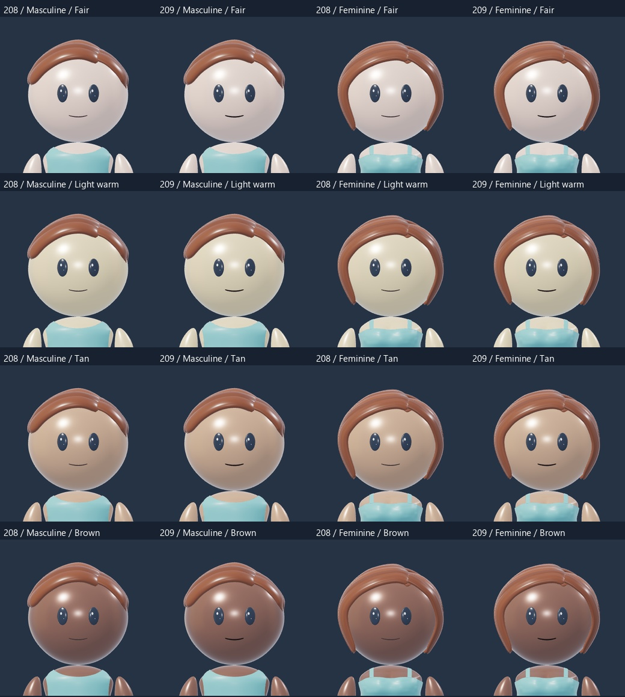
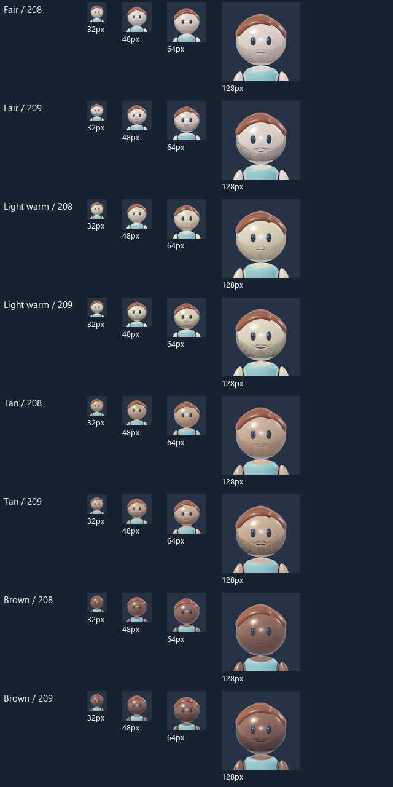
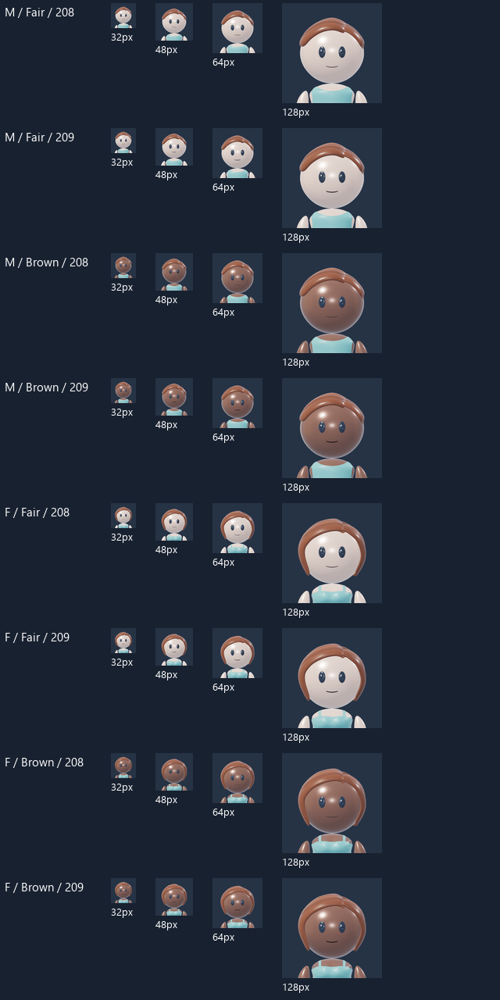
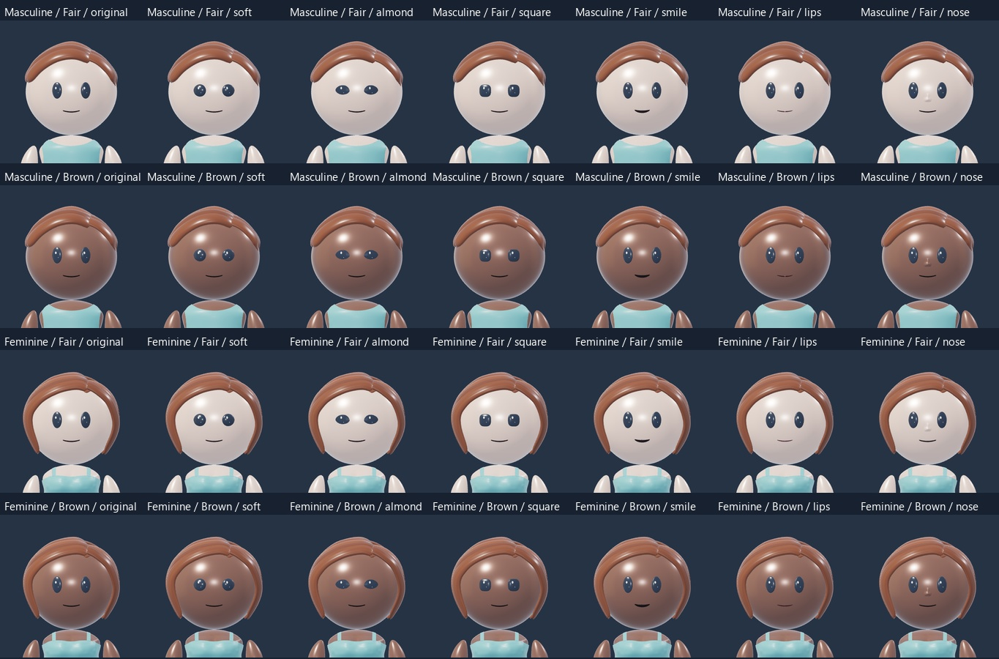

AVATAR REVIEW · 209
Stubble and mouth definition
Stronger individual stubble hairs and a clearer, restrained smile across all four skin tones. Rotate and zoom to compare, or review the matched before-and-after exports below.
 Rendered reference
Rendered referenceRotate, zoom and mix tops with bottoms.
Existing face options
Stubble: before and after, all four tones

Smile: both builds and all four tones

Stubble at actual portrait sizes

Smile at actual portrait sizes

Face options and darker skin

Scope and recovery
Candidate 209; owner review pending. The bodies, head shapes, feature placement, hairstyles, clothes, skin palette and lighting are unchanged from 208. Stubble and mouth contrast use each selected skin tone. Eyes and optional nose keep their existing geometry and finish. Recovery: 208.